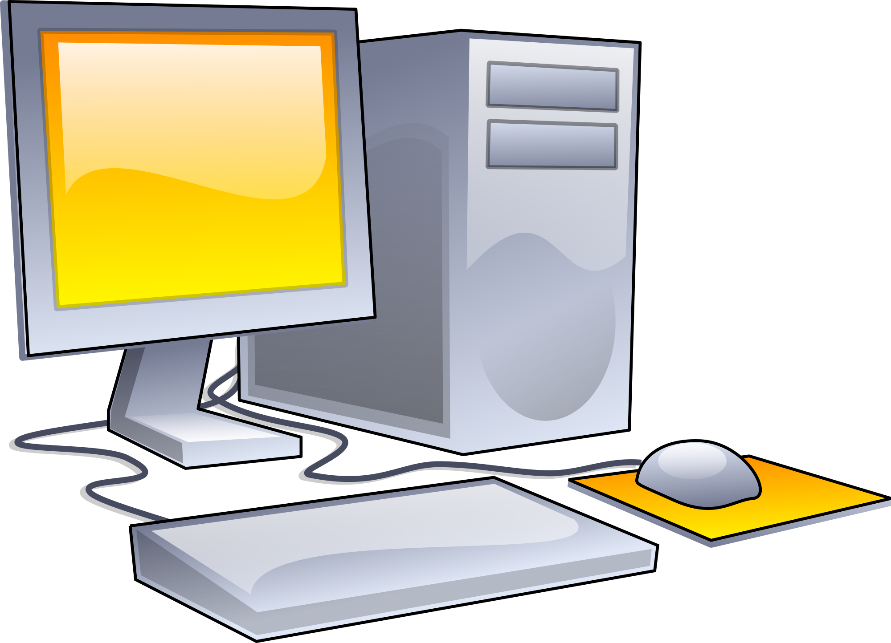

Programación Desktop
La programación de escritorio se refiere al proceso de desarrollo de software diseñado
para ser ejecutado en computadoras personales o estaciones de trabajo, con la interfaz de
usuario (UI) ejecutándose directamente en el entorno gráfico del sistema operativo del
dispositivo. A diferencia de las aplicaciones web, que se ejecutan en navegadores, las
aplicaciones de escritorio se instalan y ejecutan localmente en la máquina del usuario.
Lenguajes y Tecnologías.
Java : Un lenguaje de programación versátil utilizado
para el desarrollo de aplicaciones de escritorio a través de tecnologías como JavaFX
o Swing.
C# : Específicamente utilizado con el framework .NET
para desarrollar aplicaciones de escritorio, como las aplicaciones de Windows Forms
y WPF.
Python : Aunque es conocido principalmente por su
uso en desarrollo web, también se utiliza para crear aplicaciones de escritorio
mediante bibliotecas como Tkinter o PyQt.
C++ : Ampliamente utilizado en el desarrollo de
software de escritorio de alto rendimiento y juegos.
Conceptos fundamentales.
Interfaz de Usuario (UI): El diseño y la interacción visual de una aplicación, que
incluye elementos como botones, menús y ventanas.
Manejo de Eventos: La capacidad de detectar, procesar y responder a eventos del
usuario, como clics de ratón o pulsaciones de teclas.
Persistencia de Datos: La forma en que los datos se almacenan y recuperan en una
aplicación, ya sea mediante archivos, bases de datos u otras formas de almacenamiento.
Hilos (Threads): La ejecución simultánea de diferentes partes de un programa,
permitiendo que tareas múltiples se realicen de manera concurrente.
Arquitectura de Software: La estructura general de una aplicación, que incluye la
organización y relación entre sus componentes, como el modelo-vista-controlador
(MVC) o el modelo-vista-modelo de vista (MVVM).
Áreas especializadas.
Desarrollo de Juegos : Crear juegos de
escritorio que pueden abarcar desde simples juegos 2D hasta complejos juegos en 3D.
Diseño Gráfico y Multimedia: Desarrollar aplicaciones para la edición y manipulación
de imágenes, videos y audio.
Sistemas de Gestión Empresarial (ERP): Construir software para la gestión eficiente
de procesos empresariales, como la contabilidad, recursos humanos y logística.
Herramientas de Productividad: Crear aplicaciones que ayudan a aumentar la eficiencia
y la productividad, como suites de oficina y software de gestión de proyectos.
Simulación y Modelado: Desarrollar software que permite simular y modelar sistemas
complejos, como simuladores de vuelo o programas de diseño de ingeniería.
